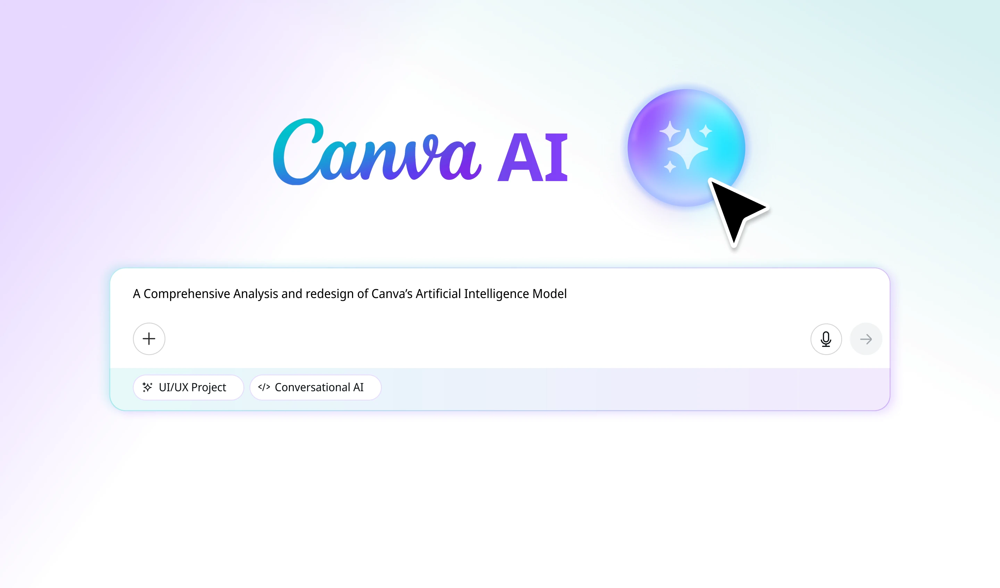
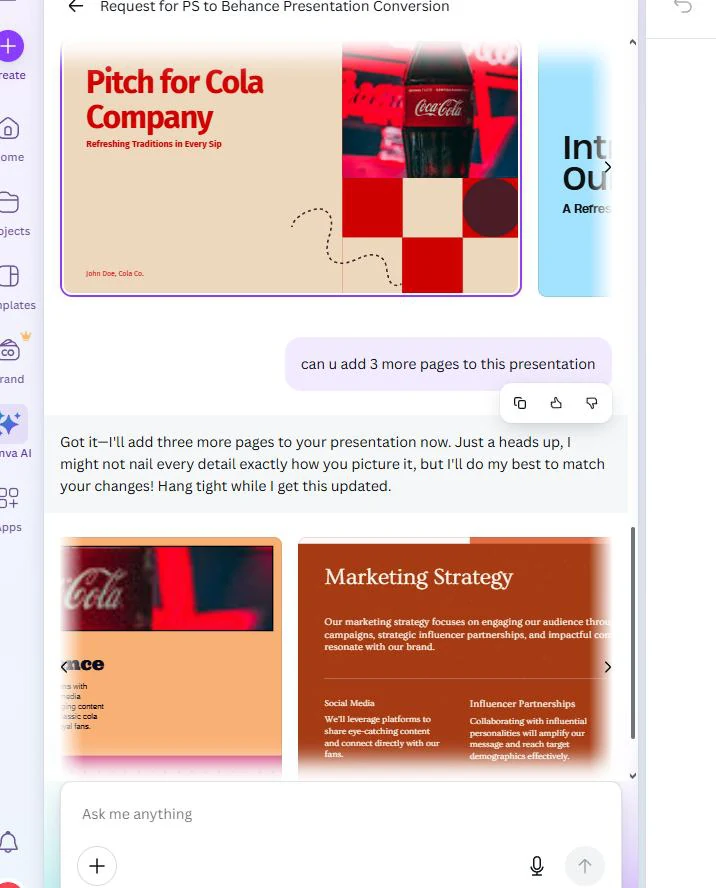
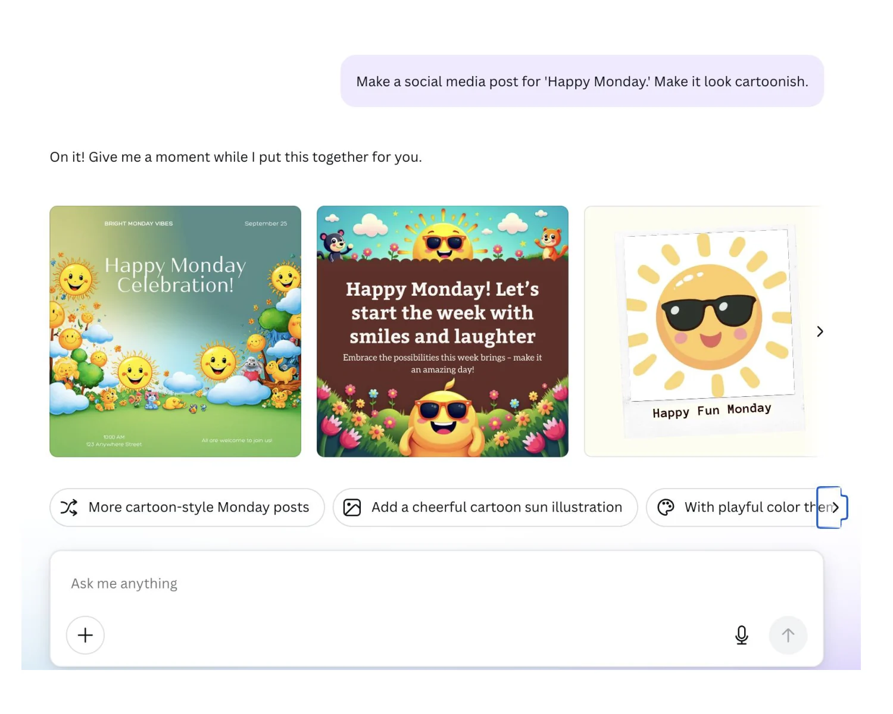
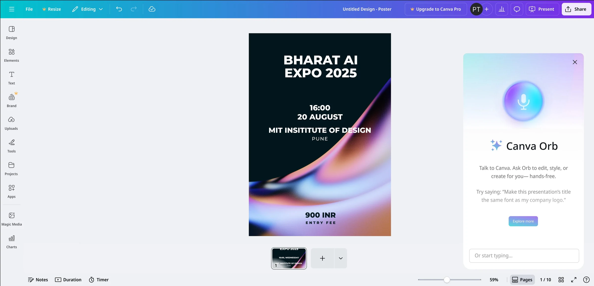
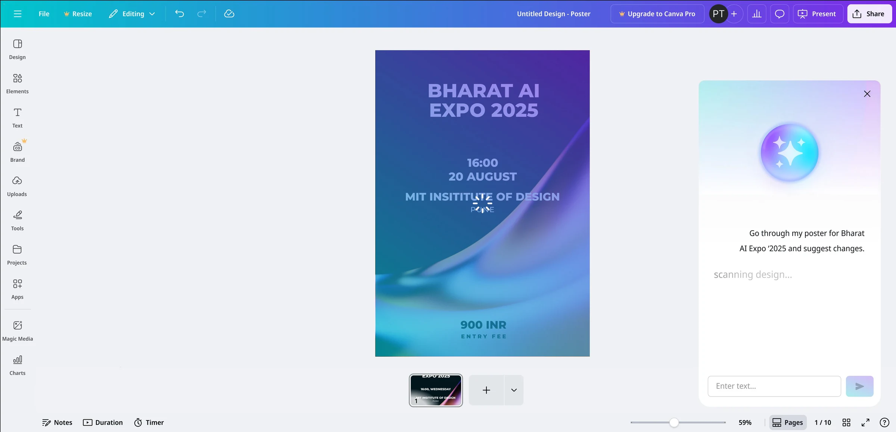
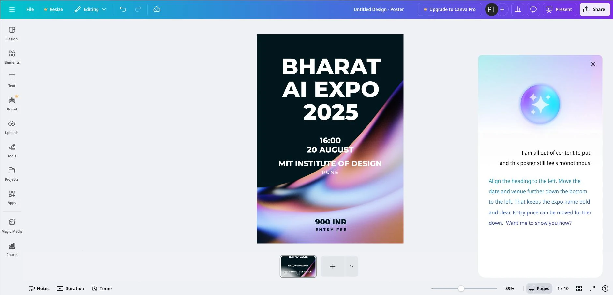
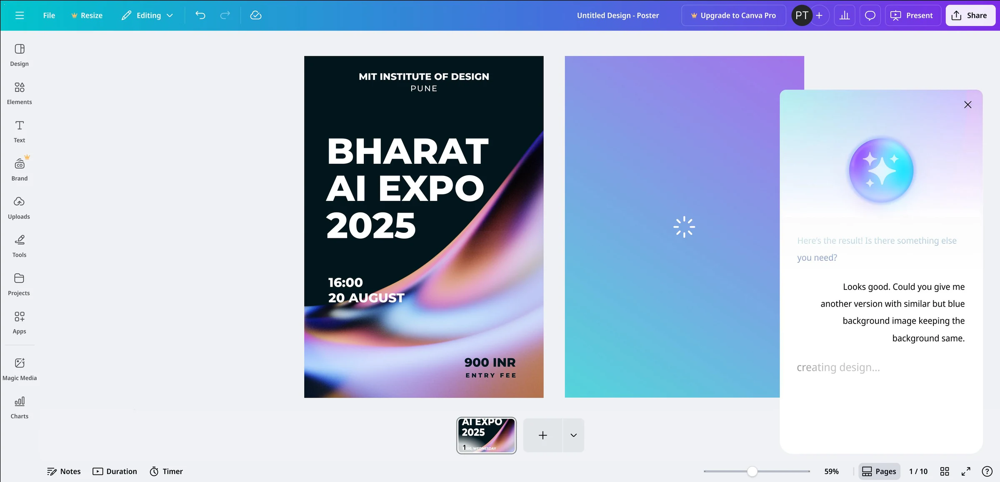
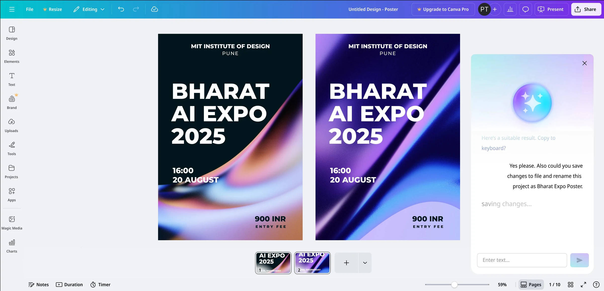

Canva has 180 million monthly users and 16 million subscribers. Together they have made more than 20 billion designs, about 280 every second.
Canva’s reviews on G2 show who they are: small business owners and founders, then teachers, school staff and students. They can tell when a poster looks wrong, but not why, and they can’t put it in design words.
So the assistant had to be tested with the prompts these people would write. First, we read what they already said about it.
Reviews and Reddit threads about Canva AI told the same story: it doesn’t follow what you ask, and asking again doesn’t help.
Canva AI is bad at following prompts. “I keep asking that it use non-photo elements, only illustrations and text, but it continues to produce posters (pretty badly) with photos, despite how many times and how many ways I ask it to not use photos. Very frustrating.”
AI insanity. “Is anyone else finding the Canva AI super frustrating? … When I examine the images more closely, people have seven fingers or clubbed hands … Usable images are close to zero.”
We wanted to see these failures for ourselves, across everything the assistant can do.
Canva AI offers five kinds of ready-made prompt. We tried them all, then built a bank of about 50 prompts in everyday words and recorded what happened with each. Two of them taught us the most.
Canva AI’s five prompt types
It built a good deck, with basic animation and facts from the internet, and offered more content as prompt bubbles. Asked to add three more pages, it made a separate file instead, in a different size and style, with content that didn’t fit the deck.

Every variation came in the same cartoon style, never anime, pop art or minimal. Its suggestions were too vague to act on, so getting closer meant trial and error, and it never said why a result missed.

To turn notes like these into design decisions, we needed a way to sort them.
Seven qualities an assistant for designing needs, each named after a failure we saw. It became the checklist for every screen we designed.
How well it grasps the intent behind a prompt.
“Make the font more intense” was read as bold, not as the rock concert feel the user meant.
How much control the user keeps over what it does.
It made a new file for an infographic instead of letting the user place it in the slides.
How varied and useful its alternatives are.
It offered only cartoon variations, never anime or pop art.
How well it matches the look asked for.
It returned a clean digital poster for a grungy, hand-drawn brief.
How well it respects real-world limits.
It accepted a 10-foot web header without a warning and turned it into misleading pixel sizes.
Whether it adapts across tries and corrections.
It kept misplacing key text after being corrected again and again.
How smoothly it fits into the creative process.
It forced trial-and-error prompting instead of refining the same design.
Run back through the framework, our findings became ten changes.
We redesigned the assistant around these changes, and called it Orb.
Orb is our redesign of Canva AI. It sits beside your design, works in the file you have open, and asks before it changes anything. Here is one conversation with it, on a real poster.
Orb opens beside the poster with an example prompt, and takes voice or text. The moving orb shows that it is listening.
Why: an empty chat box stops someone who doesn’t know what to ask. An example gets them started.
CAPABLE: contextual understanding, proactive suggestion, efficiency and flow

Asked to go through the poster and suggest changes, Orb takes the role of a reviewer. A sheen passes over the poster and the status reads “scanning design”.
Why: visible progress keeps the user’s trust while they wait.
CAPABLE: contextual understanding, agency and control, efficiency and flow

“Apply my usual font size” brings in the type styles from earlier projects, in the same file.
Why: the old assistant remembered nothing and started fresh each time.
CAPABLE: contextual understanding, agency and control, efficiency and flow
“This poster still feels monotonous” is treated as a problem, not a command. Orb names a layout problem, suggests exact changes, and ends with “Want me to show you how?”
Why: non-designers describe a feeling. Orb turns it into a fix and leaves the decision with them.
CAPABLE: proactive suggestion, contextual understanding, agency and control, aesthetic alignment

“Another version with a similar but blue background” changes the background and nothing else, while the status reads “creating design”.
Why: the old assistant moved text it was told to keep.
CAPABLE: proactive suggestion, contextual understanding, agency and control, aesthetic alignment

“Save changes to the file and rename this project as Bharat Expo Poster” is done in one step, on the whole file, not just the image.
Why: one sentence replaces several clicks.
CAPABLE: contextual understanding, agency and control, boundary awareness, efficiency and flow

Orb on the real poster, from the first question to the renamed file.